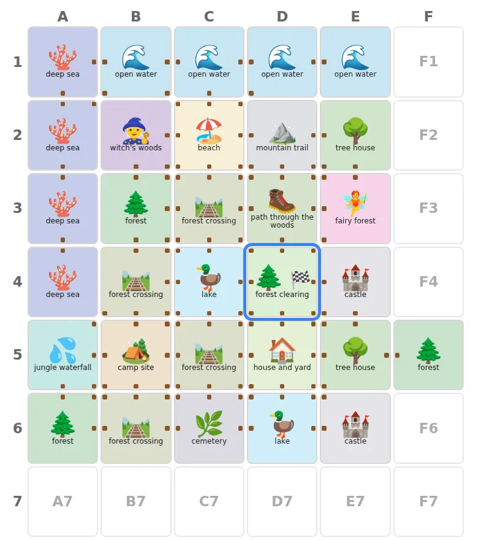
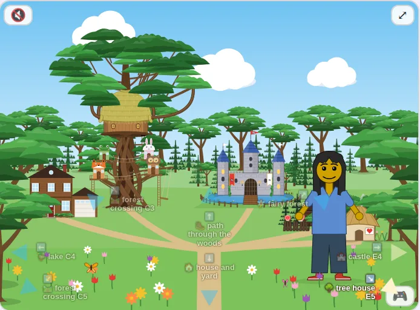
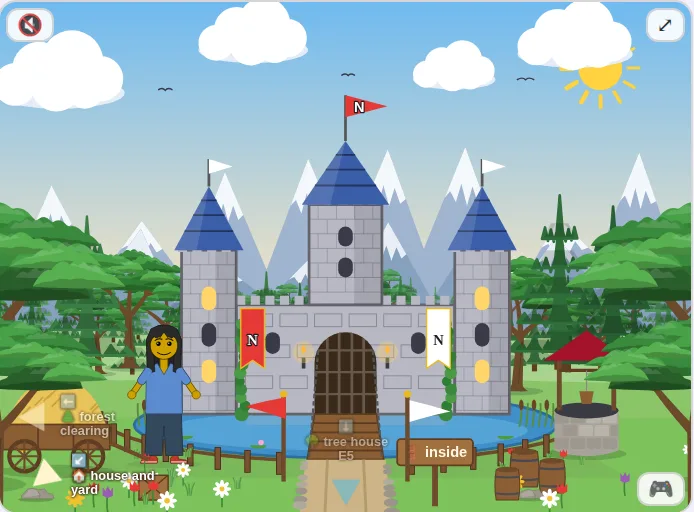

Hazel reports · ^report(25) · performance · started 2026-10-22, updated 2026-10-22 09:36 MDT · work in progress · about 11 minutes to read
What a Call into Hazel Costs
Matthew asked, on 2026-10-22, about ^ticket(531), the experiment that moves Messed Up Dress Up's room rules into Hazel modules run through Hazel's JS library (#2719, the library; the game's side is the draft matthewhammer/kids-choice-games#2): why is Hazel so slow here for 16 x 16 map? do more analysis please, and draft a new report.
The World room's rule takes a step on the map; in the game's own node run it costs 40.0 ms p50 at 16x16, against 0.003 ms for the same rule in JS. This report takes that one call apart.
Which build. Hazel's JS library, hazel-lib.js, from #2719 (branch js-library-embed at 0d66c36618), which is #2719 on #2711 on dev at 962a7cb009. Of the 14 performance PRs on the dashboard it has one, #2679, the only one merged into dev; the other 13 are open. Matthew, after the first draft: Let's make it clear what branch we are measuring ... how many have been applied? If they are not all applied, how much would they help?
So every time below is measured three ways, on GitHub's builds of three branches: before, that build; + #2681, with #2681 merged (it carries #2661); and after, with all 14 (Before and after the performance PRs).
Short answers. All times are node on the Ubuntu laptop, p50 of one call with the target cell mid-map, the mean of two interleaved rounds; before is the measured build (1 of 14 PRs), after the same with all 14.
Most of the time is a type annotation in the rule, and #2681 removes it: 144 ms becomes 20.6 ms at 16x16, 7.0x faster, with the rule unchanged. The rule's recursive helper is written
fun (cs, c, r) : ([Cell], Int, Int) ->. Before, Hazel checks that ascription at run time on every call, by walking the value, so each step of the walk re-checks the rest of the list: one linear walk becomes a quadratic one (678 ms at 24x24, against 40.8 ms without the annotation). #2681 remembers which values are known to have a type, so the re-check is one lookup: 42.8 ms at 24x24, the same as the unannotated rule.The shipped 16x16 call, split by measuring the variants, before and after the 14 PRs. Every call pays a floor that grows with the map, and the PRs raise it by about a quarter: 8.54 ms at 16x16 before, 10.6 after (19.3 and 25.3 at 24x24). Hazel's call boundary turns the whole JS argument into unevaluated Hazel syntax, gives every node a fresh id, and then evaluates it back into the value it already was, node by node; the
(Globals, Event)parameter type walks it again. A rule that does nothing still pays this. No PR touches the library's conversion (of_js) or its fresh ids. And the argument is a new value on every call, so #2681 has never seen it: its first push walks it as before and also records every part in the memo. The rise is already there with #2681 alone (10.1 ms), and it repeats in both rounds. It comes from asking #2681's memo at every part of the argument; limited to the argument and its parts, the memo leaves the floor where it was (8.53 ms) and the shipped rule its gain (Why #2681 raises the floor).The floor of a 16x16 call that does nothing (13.8 ms in the profiled dev build, before), by profile share. Underneath, each evaluation step costs about 3 µs, so even the plain walk is 25-80 µs per cell. A countdown over plain Ints costs 3.836 ms for 128 steps before, 3.162 after (one round each: 18% less, not far past this laptop's noise). The time is spread over the evaluator's per-step pipeline, jsoo's generic calls, fresh ids and GC; there is no single hot spot, and none of the 14 PRs aims at it.
Passing only the neighbouring cells makes the call flat: 0.889 ms at 16x16, 0.782 ms at 3x3. That is the one change, available today without touching Hazel, that removes the dependence on map size: 162x faster than the shipped rule at 16x16 before the PRs, and still 23x after them, with the same answer.
The 14 PRs together halve the compile: the game's rules compile in 402 ms after, against 797 ms before. That is once per program, at load. Per call, everything they change is #2681's: the bars of Figure 3 for + #2681 and after agree within noise. Eight of the 14 cannot reach a library call at all; they speed up the editor, its worker and its recovering parser (the table).
data/prs/, the mean of two rounds. The code behind each line is in The rules behind each line.The rules behind each line
Every line in Figures 1 and 3 is one of these Hazel functions, compiled once and then called from JS with the same move: the player mid-map, going east (Way("E")). They are the driver's own code (drivers/r25.mjs), laid out here on more lines, Hazel's usual way (the same tokens; the layout is in drivers/listings_fmt.py), and each one returns the same GoSquare. What they share is folded first. The marks show where each one's time goes, in the figures' colours; each card's times are its 16x16 call before and after the 14 PRs. The top box is Hazel; the dashed one is the JS that calls it.
the annotation re-checks the rest of the list at every step the walk over the cells the call boundary the map converted once, at setup, and held in a closure only the neighbours
shared by all of them: the types, from the program's start, and the helpers
type Cell = ( col = Int, row = Int, kind = String, ways = [String] ) in type Globals = ( lever_L = Bool, lever_R = Bool, wiring = String, draws = [Float], pits_on = [Bool], covered = [Bool], hatch = Bool, things = [Thing], rooms = [String], exits = [String], out = String, out_room = Int, at_col = Int, at_row = Int, cols = Int, rows = Int, cells = [Cell] ) in type Event = + Pull(String) + PullBoulder(String) + PullHatch(Int) + PullThing(Int) + FallPit(Int) + WayOut(Int) + Way(String) in let no_way = fun (kind, d) : (String, String) -> kind == "waterfall" && d == "N" in let dir = fun d : String -> if d == "N" then (0, 0 - 1) else if d == "NE" then (1, 0 - 1) else if d == "E" then (1, 0) else if d == "SE" then (1, 1) else if d == "S" then (0, 1) else if d == "SW" then (0 - 1, 1) else if d == "W" then (0 - 1, 0) else if d == "NW" then (0 - 1, 0 - 1) else (0, 0) in let opp = fun d : String -> if d == "N" then "S" else if d == "NE" then "SW" else if d == "E" then "W" else if d == "SE" then "NW" else if d == "S" then "N" else if d == "SW" then "NE" else if d == "W" then "E" else if d == "NW" then "SE" else "" in let member = fun (s, xs) : (String, [String]) -> case xs | [] => false | x :: rest => x == s || member(s, rest) end in let decide = fun (x, back, c, r) -> case x | Some(x) => if member(back, x.ways) && !no_way(x.kind, back) then GoSquare(c, r, back, Done) else Done | None => Done end in
let mk = fun look -> fun (g, e) : (Globals, Event) -> case e | Way(d) => let (dx, dy) = dir(d) in let c = g.at_col + dx in let r = g.at_row + dy in let back = opp(d) in if c < 0 || r < 0 || c >= g.cols || r >= g.rows then Done else decide(look(g.cells, c, r, g.cols), back, c, r) | _ => Done end in let findA = fun (cs, c, r) : ([Cell], Int, Int) -> case cs | [] => None | x :: rest => if x.col == c && x.row == r then Some(x) else findA(rest, c, r) end in let shipped = mk(fun (cs, c, r, w) -> findA(cs, c, r)) in
Hazel's library (hazel.org's build of #2719, the tiles' build) loads on the first run.
const g = globalsOf(map, n, ac, ar); // all 17 fields; cells: n × n records {col, row, kind, ways} const ev = { tag: "Way", value: "E" }; V.shipped(g, ev)
The driver's copy of the game's World rule: the game keeps find beside on_event and names Common.dir and Common.opp (its own text is folded below); here the lookup is passed to mk. The logic is the same, and the two times agree within noise above 8x8. Three costs stack: the boundary converts the whole map, the walk goes to the target, and the annotation on findA makes every step of the walk re-check the rest of the list.
the game's own World rule (dress-up/js/25-scripting.js at 2ebda59ab4, as the game compiles it)
# Places with no way out on a side, whatever their ways say: the waterfall's N, its cliff. # let no_way = fun (kind, d) : (String, String) -> kind == "waterfall" && d == "N"; let find = fun (cs, c, r) : ([Cell], Int, Int) -> case cs | [] => None | x :: rest => if x.col == c && x.row == r then Some(x) else find(rest, c, r) end; # A way out walked through: into the square beside it, coming in from the side facing back, # # if that square is on the map and has a way back; else nowhere. # let on_event = fun (g, e) : (Globals, Event) -> case e | Way(d) => let (dx, dy) = Common.dir(d) in let c = g.at_col + dx in let r = g.at_row + dy in let back = Common.opp(d) in if c < 0 || r < 0 || c >= g.cols || r >= g.rows then Done else (case find(g.cells, c, r) | Some(x) => if Common.member(back, x.ways) && !no_way(x.kind, back) then GoSquare(c, r, back, Done) else Done | None => Done end) | _ => Done end
let mk = fun look -> fun (g, e) : (Globals, Event) -> case e | Way(d) => let (dx, dy) = dir(d) in let c = g.at_col + dx in let r = g.at_row + dy in let back = opp(d) in if c < 0 || r < 0 || c >= g.cols || r >= g.rows then Done else decide(look(g.cells, c, r, g.cols), back, c, r) | _ => Done end in let findU = fun (cs, c, r) -> case cs | [] => None | x :: rest => if x.col == c && x.row == r then Some(x) else findU(rest, c, r) end in let noann = mk(fun (cs, c, r, w) -> findU(cs, c, r)) in
Hazel's library (hazel.org's build of #2719, the tiles' build) loads on the first run.
const g = globalsOf(map, n, ac, ar); // all 17 fields; cells: n × n records {col, row, kind, ways} const ev = { tag: "Way", value: "E" }; V.noann(g, ev)
The same rule without the annotation on its helper: the walk is linear again. What #2681 gives the shipped rule without changing it.
let mk = fun look -> fun (g, e) : (Globals, Event) -> case e | Way(d) => let (dx, dy) = dir(d) in let c = g.at_col + dx in let r = g.at_row + dy in let back = opp(d) in if c < 0 || r < 0 || c >= g.cols || r >= g.rows then Done else decide(look(g.cells, c, r, g.cols), back, c, r) | _ => Done end in let nthU = fun (cs, i) -> case cs | [] => None | x :: rest => if i == 0 then Some(x) else nthU(rest, i - 1) end in let index = mk(fun (cs, c, r, w) -> nthU(cs, r * w + c)) in
Hazel's library (hazel.org's build of #2719, the tiles' build) loads on the first run.
const g = globalsOf(map, n, ac, ar); // all 17 fields; cells: n × n records {col, row, kind, ways} const ev = { tag: "Way", value: "E" }; V.index(g, ev)
Goes straight to the target's position, r * cols + c, with no comparison per cell; still a walk down the list to get there.
let held = fun (cells : [Cell]) -> fun (n, e) -> case e | Way(d) => let (dx, dy) = dir(d) in let c = n.at_col + dx in let r = n.at_row + dy in let back = opp(d) in if c < 0 || r < 0 || c >= n.cols || r >= n.rows then Done else decide(nthU(cells, r * n.cols + c), back, c, r) | _ => Done end in
Hazel's library (hazel.org's build of #2719, the tiles' build) loads on the first run.
const hf = V.held(g.cells); // once: the map converted into a Hazel closure hf({ at_col: ac, at_row: ar, cols: n, rows: n }, ev) // each event: four numbers
The map crosses the boundary once, into a closure (24.8 ms at 16x16, once); each event passes four numbers. The walk remains, and the held list is still re-stepped when it is substituted into the call.
let idA = fun (g, e) : (Globals, Event) -> Done in
Hazel's library (hazel.org's build of #2719, the tiles' build) loads on the first run.
const g = globalsOf(map, n, ac, ar); // all 17 fields; cells: n × n records {col, row, kind, ways} const ev = { tag: "Way", value: "E" }; V.idA(g, ev)
Ignores its argument: what is left is the boundary alone, converting the whole map and checking it against (Globals, Event). Every rule that is passed the map pays at least this.
let near = fun (n, e) -> case e | Way(d) => let (dx, dy) = dir(d) in let c = n.at_col + dx in let r = n.at_row + dy in let back = opp(d) in if c < 0 || r < 0 || c >= n.cols || r >= n.rows then Done else decide(findU(n.near, c, r), back, c, r) | _ => Done end in
Hazel's library (hazel.org's build of #2719, the tiles' build) loads on the first run.
const nb = { at_col: ac, at_row: ar, cols: n, rows: n, near: g.cells.filter(x => Math.abs(x.col - ac) <= 1 && Math.abs(x.row - ar) <= 1) }; // at most 9 cells V.near(nb, ev)
The same decision, given only the squares around the player: JS picks the at most nine neighbours before the call, so the argument, the walk and the check are all small, and the cost does not grow with the map.
Before and after the performance PRs
The dashboard lists 19 PRs against Hazel's performance. Five are not speed changes: #2678, #2689, #2690 and #2691 add CI budgets and tests; #2490 is a spike that compiles the evaluator with wasm_of_ocaml, in a separate toolchain. That leaves 14. Only #2679 is merged into dev, so the measured build has 1 of the 14. To see what the other 13 would do, two trial branches were pushed to hazelgrove/hazel and built by GitHub's Deploy workflow, the same build as the measured one:
- + #2681:
trial/r25-2681at9e461fcc09, the measured build with #2681 merged (which carries #2661). 3 of 14. - after:
trial/r25-all-perfat8756a15dfc, the measured build with all 13 open speed PRs merged; #2673's and #2671's test lists and #2610's parser call resolved as on #2635. 14 of 14.
They merge cleanly but for three small conflicts (two test lists, and #2610 and #2614 both fixing the recovering parser), and both trial branches build. What each PR can reach in a library call follows from what the library runs: FastParse, then Statics.mk once per program, then Evaluator.evaluate from scratch on every call, on the page's own thread (src/web/HazelLibCore.re).
| PR | what it does | state | in the measured build | reaches | why |
|---|---|---|---|---|---|
| #2679 | an ascription pushed through a value gives the value back when it already has the type | merged into dev | yes | each call | pushing (Globals, Event) and find's ([Cell], Int, Int) through the argument |
| #2681 | a value known to have a type is not walked again for it | open | no | each call | find(rest, ...) re-checks the rest of the list at every step: the quadratic part |
| #2661 | types get a Merkle hash; is_consistent once per pair of types | open | no | each call | the type question each ascription push asks; #2681 keys its memo by this hash |
| #2603 | statics: a let analyzed once unless it refers to itself, plus three more | open | no | compile | Statics.mk on the program, once per runProgram |
| #2651 | statics: a module binding analyzes its definition once, not twice | open | no | compile | the game's rules are modules |
| #2608 | elaborations leave out the source's whitespace and comments | open | no | compile, and what a call evaluates | smaller elaborated terms |
| #2675 | incremental evaluation reuses expressions around a recursive let | open | no | nothing here | the library evaluates from scratch (Evaluator.evaluate), with no incremental reuse |
| #2673 | incremental evaluation recognizes an unchanged expression by its Merkle hash | open | no | nothing here | as #2675 |
| #2606 | the eval worker keeps the incremental cache | open | no | nothing here | the library runs on the page's thread, with no worker |
| #2652 | Firefox's eval worker starts at load | open | no | nothing here | no worker |
| #2614 | the recovering parser about 2.5x faster | open | no | nothing here | the library parses with FastParse; the recovering parser runs only when that fails |
| #2610 | the load fallback parses with the segmented parser | open | no | nothing here | as #2614 |
| #2671 | MapPiece keeps unchanged pieces as the same objects | open | no | nothing here | the editor's view |
| #2672 | measuring the font no longer scrolls the editor | open | no | nothing here | the editor's view |
Measured, at 16x16 (the mean of two rounds; the rounds' spread is under 18% for nine in ten of the times from 6x6 up, so read smaller differences as noise):
| 16x16, ms | before | + #2681 | after |
|---|---|---|---|
| shipped rule | 144 | 20.6 | 19.1 |
| find unannotated | 18 | 19.5 | 19.4 |
| identity rule (the floor) | 8.54 | 10.1 | 10.6 |
| neighbours only | 0.889 | 0.926 | 0.832 |
| shipped rule at 24x24 | 678 | 42.8 | 45.9 |
- #2681 is the one that matters per call. It makes the annotated rule linear: 7.0x faster at 16x16 and 15.9x at 24x24, where the quadratic part was largest. The game's own World handler moves the same way (142 to 21.5 ms at 16x16).
- It costs the floor about a quarter (8.54 to 10.1 ms at 16x16): every call's argument is a fresh value, so its first push records it without ever reusing it. The unannotated rules carry the same rise. A memo of values from earlier calls cannot help here, since
of_jsnever gives the same object twice; what would is not re-stepping the converted value at all (fix 1 below). - The other 11 change nothing per call, within noise. Three reach the compile, and with them it halves; eight cannot reach the library at all.
| build | compile the game's rules, ms (each round) | compile and run this report's program, ms (each round) |
|---|---|---|
| before: the measured build: 1 of the 14 PRs | 797 (807, 788) | 344 (338, 350) |
| + #2681: + #2681 and #2661: 3 of 14 | 810 (804, 816) | 367 (347, 386) |
| after: all 14 PRs | 402 (390, 414) | 276 (270, 282) |
Each compile is the first call in a fresh node process, so it includes the JIT's warm-up; there is one per round. The drop comes with the PRs that reach the compile (#2603, #2651, #2608); which of them carries it was not measured apart.
Both trial branches pass Hazel's whole test suite on GitHub (Fast checks and Full tests): #2681 on the measured build, and all 14 PRs merged together.
Why #2681 raises the floor, and a fix
Matthew, on the floor's rise: find why #2681 raises the floor by about a quarter, and whether it can skip recording values it will never see again
(^ticket(535)).
Why. #2681 asks its memo (has_type, a WeakMap) at every part of every value an ascription is pushed through, and after a walk that gives a part back unchanged it records that part, and every tail of a list. Each ask and each record also looks up the type's hash (#2661's cache, another WeakMap). Counted by wrapping WeakMap's get and set around GitHub's build, without rebuilding (drivers/floor2681.mjs), one 16x16 call of the identity rule does 4,137 memo lookups, all misses, 2,580 writes (the tails of the cells' list and of every cell's ways, every record and every field) and 6,734 type-hash lookups. The argument is converted afresh on every call, so nothing recorded is asked about again. The shipped rule's whole gain is 137 hits, one per step of find.
The writes alone are not the cost. With only them switched off, the identity call was no faster (9.63 and 9.88 ms in two rounds, against 9.69 ms with them), while the shipped rule, now missing every time, took 194 ms: slower than before #2681 (141 ms), since every check still asks the memo and the type hash. Nor is it the collector: GC time per identity call was 2.45, 2.54 and 2.39 ms in the three builds below. The cost is the asking, at every part.
A fix. The memo cannot tell which values it will see again, but the pattern it exists for has a fixed shape: a recursive function whose annotated parameter receives the tail of a list it was given, as the argument itself or as a part of an argument tuple, like find(rest, c, r) against ([Cell], Int, Int). So the trial branch trial/r25-2681-depth (5b79ba5f95) asks and tells the memo only at a pushed value and its parts, depth 0 and 1 (Ascriptions.memo_depth); a record's label and a list's tail count as the same depth as the record or the list. Deeper parts are walked as before #2681.
| one 16x16 call | memo lookups | memo hits | memo writes | type-hash lookups |
|---|---|---|---|---|
| identity rule, #2681 | 4,137 | 0 | 2,580 | 6,734 |
| identity rule, depth-limited | 6 | 0 | 3 | 8 |
| shipped rule, #2681 | 4,548 | 137 | 2,717 | 7,693 |
| shipped rule, depth-limited | 673 | 136 | 396 | 968 |
| ms per call | this report's driver, 2 rounds | the floor driver, 3 rounds | ||||
|---|---|---|---|---|---|---|
| before | #2681 | depth-limited | before | #2681 | depth-limited | |
| identity rule, 16x16 | 8.54 | 10.1 | 8.53 | 8.92 | 9.69 | 9.01 |
| identity rule, 24x24 | 19.3 | 25.4 | 19.1 | 18.7 | 19.9 | 19.7 |
| shipped rule, 16x16 | 144 | 20.6 | 18.9 | 141 | 17 | 18.2 |
| shipped rule, 24x24 | 678 | 42.8 | 42.2 | 637 | 38.9 | 41.1 |
So yes: limited this way, #2681 stops recording what these calls never see again. The floor is back where it was before #2681 (8.53 ms at 16x16 against 8.54), and the shipped rule keeps its gain (18.9 ms against 20.6 with the whole memo, and 144 before). The two drivers disagree on how big the rise was (18% in this report's, which runs many variants and sizes in one process, 9% in the floor driver's three variants); the limit removes it in both at 16x16. At 24x24 the floor driver's mean is 19.7 ms against 18.7 before, but one of its three rounds ran long (18.9 / 21.5 / 18.6 ms), and this report's driver puts it at 19.1 against 19.3.
On GitHub the trial branch passes Fast checks; the full tests pass too, with a new test (a list inside a part of the pushed value is not remembered) that is the only one of 4,417 to fail when the limit is taken away.
The woods, re-measured on #2635
What the limit could give up: a value recognized deeper inside a later push, as when shapes already checked one by one are checked again inside a list. #2681 was first measured on #2635's woods picture (the Scenes slide), so Matthew asked: re-measure #2681's woods picture on #2635 with the depth limit, on GitHub's runners, and if it keeps the gain, propose the limit on #2681.
The 2026-10-13 Firefox driver was lost with a crash's scratch folder; its node harness survived and is now test/Test_PicView.re on the trial branch trial/2635-memo-depth (#2635's head 2b080af683, the same limit, and memo_depth made a reference so one build can time every setting). Program A is the Scenes slide's program up to its picture, B the same with the woods picture's view; each run times both at every setting in turn, after a full GC. .github/workflows/picview.yml builds the test runner and runs that group alone, on three runners at once, 21 runs each. Every setting gives the same result.
| runner | off | depth 1 | depth 2 | depth 3 | whole | depth 1 keeps |
|---|---|---|---|---|---|---|
| 1: EPYC 7763 64-Core | 2,823 | 2,434 | 2,402 | 2,390 | 2,416 | 96% |
| 2: EPYC 7763 64-Core | 2,601 | 2,283 | 2,264 | 2,236 | 2,214 | 82% |
| 3: EPYC 9V74 80-Core | 2,061 | 1,786 | 1,764 | 1,756 | 1,749 | 88% |
The fastest of 21 runs, ms, program B (the Scenes program with the woods picture's view). Depth 1 keeps is its share of the whole memo's gain over off. Two earlier single runs of 9 disagreed, one finding depth 1 kept none of the gain and the other nearly all: each setting's runs fall in two clusters about 500 ms apart, so a median of nine can land in either. Hence three runners, the fastest run, and the median beside it (70-92% by the median). The raw runs are in data/floor/picview_a1e0189045/.
Depth 1 keeps 82-96% of the memo's gain on the woods. Deeper limits keep a little more of it and give back part of the library's floor:
| has_type asked and told to | library floor, 16x16 (ms) | against before | woods gain kept |
|---|---|---|---|
| no memo (before) | 8.54 | +0% | 0% |
| depth 1 | 8.53 | +0% | 82-96% |
| depth 2 | 9.55 | +12% | 87-103% |
| depth 3 | 10.5 | +23% | 94-106% |
| whole (#2681) | 10.1 | +18% | 100% |
The floor is this report's driver, two rounds each; depths 2 and 3 were timed in a later session than the rest, and this laptop's run-to-run noise is about 10%. Writes per 16x16 identity call: 3 at depth 1, 276 at depth 2, 532 at depth 3, 2,580 with the whole memo.
So depth 1 is the limit to propose: no rise in the library's floor, the annotated rule's gain kept in full, and most of the woods' gain.
What happens in one call



Way("E") this report times: the rule finds the square east of the player in cells and answers GoSquare(4, 3, "W", Done) if it has a way back west (the rule counts from 0, so D4 is (3, 3)). Every arrow is shown here (🔬 Inspection's 🧭 all arrows); a player sees one when near it. Pictures from GitHub's runner (kids-choice-games, branch shots-535, tools/shots.mjs).The game compiles each room's module once (runProgram) and keeps the JS function Hazel gives back for the room's on_event. On each event it calls that function with two arguments, Globals and Event. For the World room, Globals holds the player's position, the map size and cells, a list with one record per square: {col, row, kind, ways}. The game rebuilds it on every event (0.098 ms in JS at 16x16, negligible). Inside the library (src/web/HazelLibCore.re, function_of), each call then:
- runs
of_json each argument. This does not build Hazel values: arrays becomeListLitsyntax, objects aTupleofTupLabels, and every node gets a fresh id (Exp.fresh, which callsId.mk, a UUID). 256 cells make about 4.6k nodes. - builds
Ap(f, arg)and evaluates it from scratch, with no statics and no reuse. - the evaluator steps the argument back into a value, one node at a time, through the whole stepping pipeline (
Transition.re'sListLit,TupleandTupLabelcases). - matching the parameter pattern
(g : Globals, e : Event)pushes the type ascription through the whole record (Ascriptions.re), allocating a freshAscnode and id per element even where nothing changes. - runs the rule, then converts the (small) result back with
to_js.
A 16x16 call with an event the rule ignores (| _ => Done) costs 13.8 ms; the same call with no cells costs 0.44 ms. That difference is steps 1, 3 and 4 alone, about 3 µs per node. Its profile shares are in Figure 2; Id.mk is about 20% of all time, and the top self-time entry is caml_subarray_to_jsbytes, the byte copy in its UUID.
of_js, and GC with the rest. Profiled times run long; the shares are what to read.Why the rule's walk is quadratic
The World rule finds the target square with a recursive helper:
let find = fun (cs, c, r) : ([Cell], Int, Int) -> case cs | [] => ... | x :: rest => if x.col == c && x.row == r then ... else find(rest, c, r) end
Hazel's evaluator treats a pattern with a type ascription as a run-time check: PatternMatch.re wraps the argument in Asc(d, ty) and Ascriptions.transition_multiple pushes it through the value, element by element and field by field. So find(rest, c, r) re-checks all of rest, at every step. A walk to index i in a list of length L costs about i × L. In a profile of a deep find, 58.6% of the time is in transition_multiple under matches_inner.
That is also why the game's own figure, 40 ms, is lower than this report's 144 ms: the cost depends on where the target sits in the list. With all four ways set, a target at index 1 costs 18 ms at 16x16 and the last one 244 ms; removing only the annotation brings the last to 33 ms (8x8: 23 to 8.9 ms). The Square room's find and doors helpers are annotated the same way, which fits a lever with 40 doors taking about 85 ms.
GoSquare. Index arithmetic takes one nth at r*cols+c; held converts the map once into a Hazel closure (24.8 ms at setup) and calls it per event; identity is a rule that ignores its argument, so it is the floor. Only the shipped rule's bars move far, and only at + #2681.The numbers
Before and after the PRs, by map size (ms, p50, the mean of two rounds)
| map (cells) | shipped | unannotated | identity | held | neighbours | ||||||
|---|---|---|---|---|---|---|---|---|---|---|---|
| before | + #2681 | after | before | after | before | after | before | after | before | after | |
| 3x3 (9) | 1.62 | 1.53 | 1.32 | 1.06 | 1.09 | 0.675 | 0.769 | 0.721 | 0.722 | 0.782 | 0.803 |
| 4x4 (16) | 2.78 | 2.33 | 1.93 | 1.54 | 1.68 | 0.565 | 0.569 | 1 | 1.02 | 0.881 | 0.886 |
| 6x6 (36) | 6.42 | 3.56 | 3.11 | 3.43 | 3.13 | 0.999 | 1.18 | 2.31 | 1.88 | 0.955 | 0.863 |
| 8x8 (64) | 16.3 | 5.33 | 5.56 | 5.01 | 5.11 | 2.42 | 2.6 | 3.06 | 2.88 | 0.908 | 0.863 |
| 12x12 (144) | 50.3 | 12 | 10.9 | 9.96 | 10.6 | 4.71 | 5.75 | 6.34 | 5.96 | 1.12 | 0.856 |
| 16x16 (256) | 144 | 20.6 | 19.1 | 18 | 19.4 | 8.54 | 10.6 | 10.8 | 10.7 | 0.889 | 0.832 |
| 24x24 (576) | 678 | 42.8 | 45.9 | 40.8 | 42.6 | 19.3 | 25.3 | 26.2 | 26.1 | 1.21 | 0.931 |
Growth exponents from 64 to 576 cells, before / after: shipped 1.70 / 0.96, unannotated 0.96 / 0.97, identity 0.95 / 1.03. Every round of every build is in data/prs/.
Per-step costs, before and after (ms, p50)
| program | before | after |
|---|---|---|
| walk L=64 i=0 | 1.451 | 1.704 |
| walk L=64 i=32 | 2.512 | 3.262 |
| walk L=256 i=0 | 1.443 | 1.478 |
| walk L=256 i=32 | 2.767 | 2.97 |
| walk L=256 i=64 | 4.409 | 4.757 |
| walk L=256 i=128 | 6.55 | 7.05 |
| walk L=1024 i=0 | 7.319 | 6.74 |
| walk L=1024 i=32 | 8.77 | 7.95 |
| walk L=1024 i=64 | 11.646 | 9.294 |
| walk L=1024 i=128 | 14.712 | 12.51 |
| countdown i=0 | 0.037 | 0.023 |
| countdown i=32 | 0.766 | 0.69 |
| countdown i=64 | 1.873 | 1.505 |
| countdown i=128 | 3.836 | 3.162 |
| countdown i=256 | 8.121 | 7.355 |
The first run, before only (ms, p50)
The first draft's numbers, one run of the measured build, kept for the record; the reruns above agree with it within the rounds' noise.
| map (cells) | JS Globals | identity, no ascription | identity | game's World | shipped | unannotated | index | neighbours | held | held setup |
|---|---|---|---|---|---|---|---|---|---|---|
| 3x3 (9) | 0.004 | 0.68 | 0.531 | 2.92 | 1.38 | 1.24 | 1.14 | 0.865 | 0.733 | 2.64 |
| 4x4 (16) | 0.007 | 0.524 | 0.516 | 3.45 | 2.73 | 1.8 | 1.62 | 0.996 | 1.12 | 3.02 |
| 6x6 (36) | 0.02 | 0.997 | 1.12 | 7.02 | 6.12 | 3.09 | 2.91 | 0.922 | 2.22 | 4.9 |
| 8x8 (64) | 0.019 | 2.01 | 2.4 | 15.2 | 14.7 | 4.73 | 4.42 | 0.891 | 3.1 | 6.86 |
| 12x12 (144) | 0.048 | 4.31 | 5.67 | 56.1 | 53.7 | 10.8 | 9.88 | 0.892 | 7.02 | 14 |
| 16x16 (256) | 0.098 | 8.06 | 9.53 | 157 | 153 | 22.6 | 17.1 | 0.96 | 12.4 | 61.8 |
| 24x24 (576) | 0.241 | 18.5 | 21.7 | 806 | 735 | 45.5 | 40.5 | 1.93 | 56.7 | 113 |
game's World is the rule as the game compiles it; shipped is the same text rebuilt in the driver (they agree within noise above 8x8). Growth exponents from 64 to 576 cells: shipped 1.78, unannotated 1.03, index 1.01, identity 1.00, held 1.32, neighbours 0.35.
Per-step costs (ms, p50)
| program | ms |
|---|---|
| walk L=64 i=0 | 1.141 |
| walk L=64 i=32 | 3.204 |
| walk L=256 i=0 | 1.823 |
| walk L=256 i=32 | 4.301 |
| walk L=256 i=64 | 6.567 |
| walk L=256 i=128 | 10.72 |
| walk L=1024 i=0 | 9.053 |
| walk L=1024 i=32 | 10.289 |
| walk L=1024 i=64 | 13.069 |
| walk L=1024 i=128 | 15.818 |
| countdown i=0 | 0.024 |
| countdown i=32 | 0.778 |
| countdown i=64 | 1.631 |
| countdown i=128 | 3.55 |
| countdown i=256 | 9.225 |
A walk goes to index i of a list of length L held in a closure; at i = 0 it still costs O(L), since the held list is re-stepped when it is substituted into the call. The countdown uses no data at all.
The game's own measurements
| measure | value |
|---|---|
| World 3x3, node p50 / p95 | 2.03 / 2.98 ms |
| World 8x8, node p50 / p95 | 8.53 / 10.2 ms |
| World 16x16, node p50 / p95 | 40.0 / 47.0 ms |
| World in plain JS | 0.003 ms |
| FallPit, WayOut | 1.47, 2.11 ms |
| lever with 2, 8, 40 doors | 1.5, 5.1, about 85 ms |
| browser (Chrome, 8 runners): Hazel adds per event | 0.4-3.2 ms (red lever on EPYC 7763: 9.4 to 12.1 ms) |
| browser: page load, Hazel vs JS | about 525 vs 270 ms |
| browser: first compile of the rules | 340-520 ms |
| browser: heap, Hazel vs JS | 67 vs 51 MB |
The browser rows are the phase-1 comparison on GitHub's runners, on the small rooms of the shipped game; they show that at the game's real sizes Hazel adds a few milliseconds per event, and that the large maps of this report are where it stops fitting a 16 ms frame.
What would fix it
In the game's rules, available today
- Drop type annotations on recursive helpers (World's
find, Square'sfindanddoors): 144 to 18 ms at 16x16 on the measured build; linear instead of quadratic. Not needed once #2681 is in, which gives the same without touching the rules. - Pass only what the rule needs: the neighbouring cells, not the map. Flat at about 0.9 ms at every size. All 17
Globalsfields go to every room today, and each is converted and re-stepped per call.
In Hazel's library and evaluator
- Do not re-step a converted value. Have
of_jsproduce something the evaluator treats as final (or bind the argument in the environment and apply to a variable). About half the floor. - An ascription fast path: this is #2681, measured above. It remembers which values are known to have a type, so the recursive
find(rest, ...)re-check is one lookup: the annotated rule becomes linear without changing it (144 to 20.6 ms at 16x16). It is open, on top of #2661. What it does not do is cheapen a value's first push, which it now makes about a quarter dearer by recording it; checking a fresh value without allocating would. - A cheaper
Id.mk, withoutUuidm.v4's byte copy under js_of_ocaml: about a fifth of all time. - Cut the per-step pipeline when nothing uses it: the state merge, reuse check and probe sampling run on every step even with no probes and no reuse (8.1%, 8.0% and 6.8% inclusive in the walk's profile).
Fix 2 already brings the shipped rule onto the unannotated one, on its branch. Fix 1 would take the floor to perhaps a third of today's, and with it the first-push cost #2681 adds; fix 4 is what would make a linear walk cheaper. None of them makes Hazel's walk cost what JS's does (under 1 µs); a rule's design still decides whether the call depends on the map's size.
Hazel's JS library, as this report uses it
Matthew: Let's use it to help me really review our JS library for Hazel, and how well it integrates when required or wanted.
This report leans on the library (#2711, and #2719 for the frame) in four ways. Here is each, what worked, and what was rough. The rough parts are tickets now.
| use | how | what worked | what was rough | ticket |
|---|---|---|---|---|
| timing every rule (node) | Hazel.run(text) on hazel-lib.js, then the function it gives back called from JS (drivers/r25.mjs) | One script, no build: GitHub's Deploy build of any branch is a library to time (the four trial builds here). A Hazel function comes back as a JS function; records, lists, strings and constructors convert both ways. | Every call converts its argument to syntax with fresh ids and re-steps it (the floor, 31 µs a cell). No way to keep a Hazel value across calls except a closure (held). No step count, so per-step costs are inferred from times. | ^ticket(539) |
| the game's rules | Hazel.runProgram({preamble, modules, tail}), a function per room (25-scripting.js) | Named modules with their own errors; the game plays the same with 🧩 on (^ticket(531)'s checks). | Compiling the rules costs 0.8 s before the PRs (0.4 s after, above), first event or load. Handlers pay the boundary on all of Globals. | ^ticket(540) |
| the tiles under each listing | the embed frame, index.html#embed, protocol 1: set a program, get ready, size, status | The protocol is small and did what it says: ready, then the program drawn with statics and Hazel's marks, its height and its verdict back. | The cell is a static view: no caret, no selection, so the tile shapes never show (Matthew: They don't show up during selection). A whole Hazel app per frame. It draws, sizes and reports only while it can render: a hidden or background page gets height 0 and no status. It takes programs only from origins compiled into it (matthewhammer.org, localhost). | ^ticket(538) |
| the run boxes | hazel-lib.js as a plain script from hazel.org, Hazel.run on the first click | A page runs a listing in the reader's browser in a few lines: the value back, in Hazel's notation, and its time (neighbours only, 8x8: GoSquare(4, 4, "W", Done), about 3 ms after a 0.1 s compile). | 2.8 MB to load; the build to load is a branch's folder on hazel.org, which moves when the branch is pushed; nothing in the library says which version or protocol it is. | ^ticket(537) |
What the library could add, in order of what this report needed most:
- A selectable read-only view: the embed's cell with a caret and selection but no edits, so the tiles show. Hazel has one already (
CodeSelectable, used for results); a branch wiring it into the embed is being built (embed-selectable, ^ticket(538)). - Calls that do not convert what they were given before: final values from
of_js, or a handle to a value already in Hazel, so a rule called per event pays for what changed, not for the world (^ticket(539)). - A view mounted in the page, not a frame (
Hazel.mountEditor, #2711's planned next feature): one app for every listing on a page, drawn where the page is, off screen or not. - Counts as well as times: evaluation steps and conversions per call, so a report can say what a call did, not only how long it took.
- A version a page can ask for: the library's build and the embed's protocol, from the library itself, and a stable URL per release, so a page does not follow a branch.
What next
- Asymptotic analysis of every event handler in the game's Hazel rules (matthewhammer/kids-choice-games#2,
^ticket(531)), against a world (the game's JSON world data) of size N. Matthew:Each one should be O(1) or at the worst, O(log N), for a world (json data file) of size N.
For each room'son_eventand each event it takes: its cost in N, counting the call boundary (today every call converts and checks all ofGlobals, so even a handler that does nothing is O(N)), and a version meeting the bound. Known so far: World'sWayis O(N) in the cells (thefindwalk; quadratic with its annotation before #2681) and O(1) given only the neighbours (neighbours only); the Square's levers are O(doors), quadratic through the annotatedfindanddoors; the Castle'sFallPitandWayOutare O(rooms) throughindex_ofandnth. The boundary itself is the first thing to take out of N: pass each handler only what it reads, or hold the world in Hazel once and pass only what changes, as held does, with lookups that are not walks. - Change the World and Square rules on matthewhammer/kids-choice-games#2: no annotations on recursive helpers, and neighbours only in World's
Globals; re-time the game's moves at 16x16. - Land #2661 and #2681 in
dev, then rebase #2711 and #2719 on it: the game gets the linear rule without changing its rules. (Measured here ontrial/r25-2681.) - The depth-1 limit is proposed on #2681 (the proposal, with these numbers); if taken, its two commits go onto #2681's branch.
- Prototype
of_jsproducing final values, and time the identity rule's floor. - Pin the noise floor: two rounds give a spread under 18% for nine in ten of the times; five would say more.
- Measure the compile's halving PR by PR (#2603, #2651, #2608).
How this was put together
Node v22.23.2 on the Ubuntu laptop (Intel i7), one process at a time. The library is hazel-lib.js from #2719 at 0d66c36618: the minified build for every time, the dev build hazelLib.bc.js for named profiles (3 s each). The rules are the game's at 2ebda59ab4. Each time is one p50 over 20-60 reps after warm-up; for that first run the noise floor was not measured, so treat differences under about 10% as noise (the reruns below give it: under 18% for nine in ten times). The target cell is mid-map, at (n/2-1, n/2), moving east; every variant's result was checked against the game's World handler. The library exposes no step count, so per-step costs are inferred from timings. The drivers are in drivers/ (r25.mjs for the sizes, steps.mjs, profheld.mjs, and the earlier prof.mjs and prof_noann.mjs; they read the game and library from local checkouts); the data is in data/, and the profiles, too big to keep, are summarized in data/profiles.json.
Before and after the PRs: drivers/prs.sh runs r25.mjs on GitHub's Deploy builds of three branches (hazelgrove/build, <branch>/hazel-lib.js): js-library-embed at 0d66c36618, trial/r25-2681 at 9e461fcc09 and trial/r25-all-perf at 8756a15dfc, in two rounds with the builds interleaved (before, + #2681, after; then again), one node process at a time, pinned to two threads and niced, as this laptop needs. Every time above is the mean of the two rounds; each round is in data/prs/, with each build's compile times. The builds and the 14 PRs are in data/prs.json. The per-step costs are one round per build (steps.mjs). The figures and the first table use these reruns; the first run is the first draft's, kept as it was.
The data
- The numbers, for programs too: every table in this report, and what its numbers measure, is also in this page as JSON, in its
<script type="application/json" id="report-data">element, so a reader or an agent that fetches the page alone has the dataset. The same, with any raw files that survive, is in025/data/.
Where this sits: related work
Matthew asked for this report to be set beside three lines of work: the semantics of game interfaces, the adventure-game engines Messed Up Dress Up draws on, and Scratch and its kin. Each frames the same question this report measures: what an event handler is given, and how its cost grows with the world.
Languages of Play (2017)
In Languages of Play: Towards Semantic Foundations for Game Interfaces (Chris Martens and Matthew A. Hammer, 2017), a game's interface is a programming language of player intent. Its syntax is the intents the game recognizes. Its operational semantics is the mechanics, as rules for a step from a state and an intent to a new state and a response. Its type system is a contextual interface, in which only what makes sense in the current state can be said. ^report(20) sets the paper beside Messed Up Dress Up at length, and the game's page cites it.
The World rule measured here is one such step: on_event : (Globals, Event) -> Cmd takes a state and an intent (Way("E")) to a response (GoSquare(4, 3, "W", Done)). The paper's contextual interface has a cost reading that this report adds. A step that is given only its context (neighbours only: the squares a move can reach) is both well-scoped in the paper's sense and O(1) in the world. A step given the whole world, as the library's boundary gives it today, is O(N) before it does anything. The asymptotic next step (O(1) or O(log N) per handler) amounts to asking that each rule's input be its context, not the world.
Adventure-game engines, 1984 to the early 1990s
Messed Up Dress Up's places, rooms and ways out follow the graphical adventure games of that era:
- Sierra On-Line's AGI (the Adventure Game Interpreter, from King's Quest, 1984) and its successor SCI (1988);
- Lucasfilm Games' SCUMM (the Script Creation Utility for Maniac Mansion, 1987, later Monkey Island);
- Gray Design Associates' Hugo's House of Horrors (David P. Gray, 1990) and its sequels.
Their worlds were rooms, each with its own scripts: what happens on entering, on a verb used on an object, on walking to an edge. The scripts were written in small languages run by an interpreter, on PCs thousands of times slower than today's. What made that work is the shape this report arrives at. A handler touched its room's objects and a few numbered flags and variables, and no event scanned the whole world. Dress Up's rules already have the same shape, a module per room with an on_event, but the library's boundary ships the whole world into every call. Those engines met the O(1)-per-event goal by construction; Hazel's rules can meet it the same way, by what they are given (neighbours only) or by holding the world once (held) with lookups that are not walks.
Scratch, and game creation in CS education
Scratch (MIT Media Lab) is built on the same event-handler shape: sprites with scripts that start on an event ("when this sprite is clicked", a broadcast message). Its blocks are a structure editor in which a script cannot be malformed, as Hazel's tiles are. Its kin take the idea in different directions:
- Snap! adds first-class procedures.
- Alice teaches objects through 3D scenes.
- Kodu writes rules as "when ... do ...".
- Bootstrap has students write a game as pure functions over a world value, one handler per event (a key, a tick), in Racket and in Pyret. That is closest to the rules here: a handler is a function from the world and an event to a new world or a command.
Two differences matter for this report. First, Hazel's rules are typed and stay meaningful while half-written (holes), with the game's own controls inside them as livelits. Second, the cost question is the same one: Bootstrap's handlers are given the whole world value, as Dress Up's are here, and what a handler is given decides whether it grows with the world.